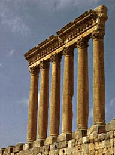
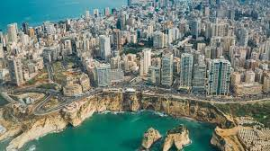

Tourism
The tourism industry in Lebanon has been important to the local economy historically and to this day comprises a major source of revenue for the country. Before the Lebanese Civil War, Beirut was widely regarded as "The Paris of the Middle East"or also "The Pearl of the Middle East" often cited as a financial and business hub where visitors could experience Levantine Mediterranean culture, cuisine, history, archaeology, and architecture of Lebanon.
Lebanon is a lot safer than you think it is. You don’t need to worry about war or terrorism more than you do in other countries, and common sense will get you far, but it’s smart to check the latest news before you go.
Baalbeck
Baalbeck, Lebanon's greatest Roman treasure, can be counted among the wonders of the ancient world. The largest and most noble Roman temples ever built, they are also among the best preserved.
Beirut
Known as the Paris of the Middle East, Beirut exudes the same old city charm as the French capital. Well known for fine Lebanese food, it is a place where years of history have been showcased.